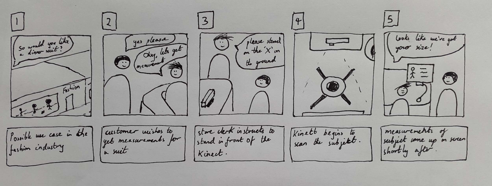
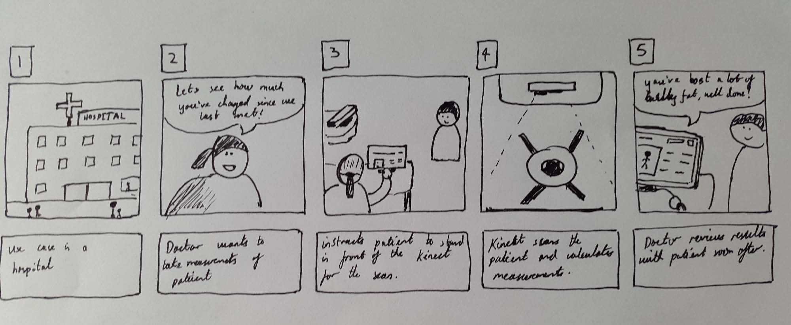

For the purposes of this project, our client was Prof. Philip Treleaven, a professor of Computer Science at UCL. Professor Treleaven first led the effort of building and encouraging the use of body scanners for the clothing industry. He, alongside Dr.Tony Ruto, developed the initial sizing software, which scanned and extracted measurements from an already existing point cloud using the Kinect 1.0. Our Secondary point of contact was Dr. Tony Ruto, whom we would refer to in the event of any particular technical difficulties as well as in seeking guidance on the quality of our extracted point cloud.
Our main goal for the project, as was discussed and agreed upon with our client, was to first examine the Kinect for Windows 2 SDK, with the aim of extracting an accurate point cloud from a static model. Once extracted, and quality approved by Dr. Tony Ruto, we could later combine our data with the aforementioned measurement extraction software to create a full, low cost Body Scanning service that utilises the Kinect 2.0.
After our intial meetings with Prof. Treleaven, and communication with Dr. Ruto on the matter of the point cloud, we concluded on a final set of clear requirements that the system must have.
Before we started on designing the UI, we first thought upon the different use case scenarios of the product and its possible applications. Shown below is a scenario based on clothing and retail, where the scanner quickly extracts the measurements of customers in order to make size recommendations.
Another scenario, shown below, depicts an application in health care for better monitoring of patients.
